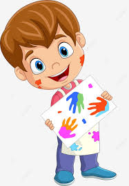

Criatividade
1. Pintura: Um jogo onde as crianças podem colorir desenhos e criar suas próprias obras de arte.
Exploração de Cores: Incentive as crianças a experimentar várias combinações de cores. Ofereça dicas sobre a importância de contrastes e misturas, explicando de forma simples como as cores interagem.
Temas de Desenho: Ofereça diferentes temas para os desenhos, como natureza, animais, planetas ou personagens imaginários, para despertar a criatividade.
Exposições Virtuais: Crie uma galeria virtual onde as crianças possam expor suas obras de arte, ajudando a desenvolver o senso de orgulho e realização.
Documento
Segue abaixo alguns documentos para utilizar:
- Peixe
- Jacaré
